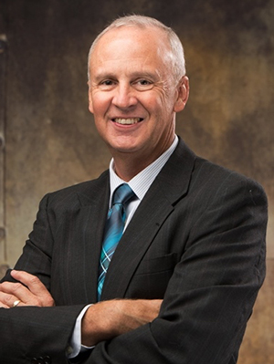

Raktim Bhattacharya, Ph.D.
Professor, Aerospace Engineering
Texas A&M University
Uncertainty quantification, data assimilation, robust control & estimation, guidance & navigation, nonlinear systems
About
The team brings together expertise in uncertainty quantification, robust inference, autonomous systems, and multiscale methods across aerospace and mechanical engineering at Texas A&M University.
Professor, Aerospace Engineering
Texas A&M University
Uncertainty quantification, data assimilation, robust control & estimation, guidance & navigation, nonlinear systems
Associate Professor, Mechanical Engineering
Texas A&M University
Bayesian optimization, multifidelity methods, uncertainty quantification, predictive analytics

Professor, Aerospace Engineering
Texas A&M University
Autonomous systems, nonlinear control, vision-based navigation, cyber-physical systems, flight tests
Associate Dean for Research, Texas A&M-Fort Worth
Professor, Aerospace Engineering
Texas A&M University
Hypersonic aerodynamics, boundary-layer transition, combustion stability
Professor, Aerospace Engineering
Texas A&M University
Rotorcraft autonomy, VTOL aeromechanics, micro air vehicles, eVTOL powertrains, experimental flight dynamics, bio-inspired flight
Associate Professor, Aerospace Engineering
Texas A&M University
Space system autonomy, AI for systems architecture, human-agent collaboration, small satellite constellations, Earth observation missions